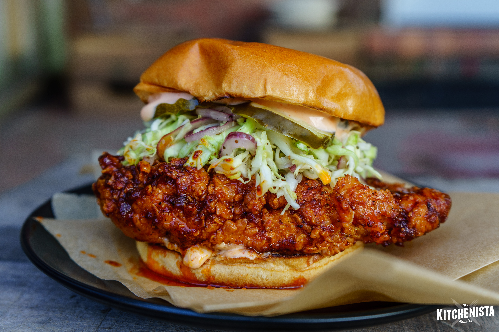

Ultra-crispy fried chicken doused with a cayenne-infused glaze.
Nashville Hot Chicken originated at Prince’s Hot Chicken Shack, a Black-owned establishment in Nashville. The fiery
fried chicken has been popular for over eighty years now. This method of preparation originates within African American
communities in the Southern United States. A richly pigmented seasoning paste gives the fried chicken its reddish hue.
Spice blends, preparation methods, and heat intensity vary from recipe to recipe or depending on the chef.
Ingredients
- Chicken breasts
- Cayenne, chilli, paprika and garlic powder
- Flour, eggs, buttermilk
- Salt and vegetable oil
Recipe instructions
- Toss chicken with black pepper and 2 Tbsp. salt in a large bowl. Cover and chill at least 3 hours.
- Whisk eggs, buttermilk, and hot sauce in a large bowl. Whisk flour and remaining 4 tsp. salt in another large bowl.
- Working with 1 piece at a time, dredge in flour mixture, shaking off excess, then dip in buttermilk mixture, letting
excess drip back into bowl. Dredge again in flour mixture and place on a baking sheet.
- Fry chicken. Whisk cayenne, brown sugar, chili powder, garlic powder, and paprika in a medium bowl; carefully whisk in
1 cup frying oil. Brush fried chicken with spicy oil. Serve with bread and pickles.
Return to top
Return to main